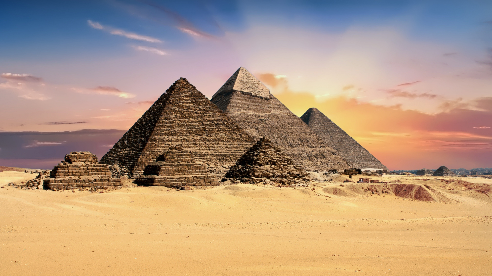
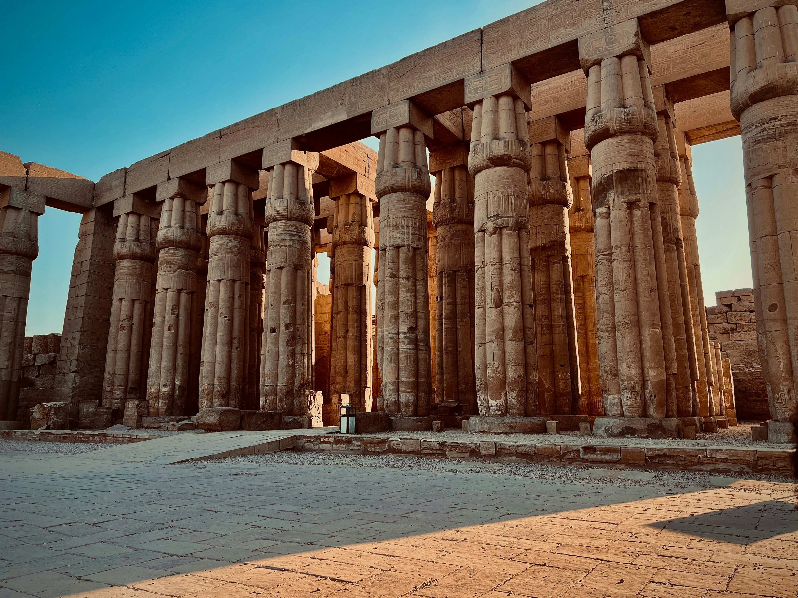
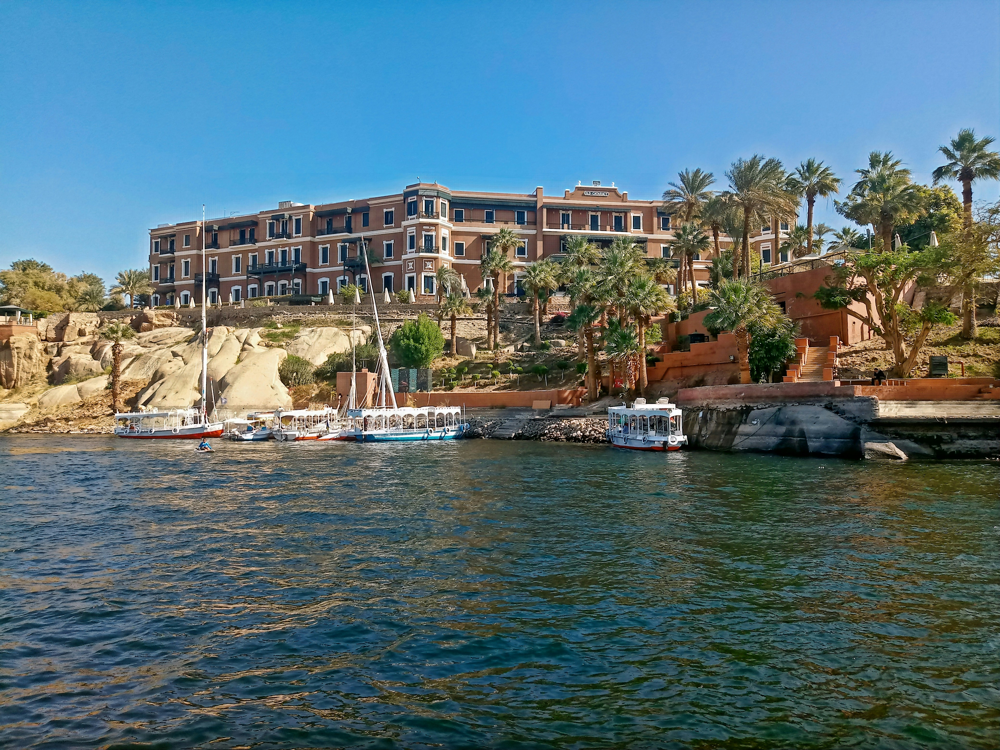
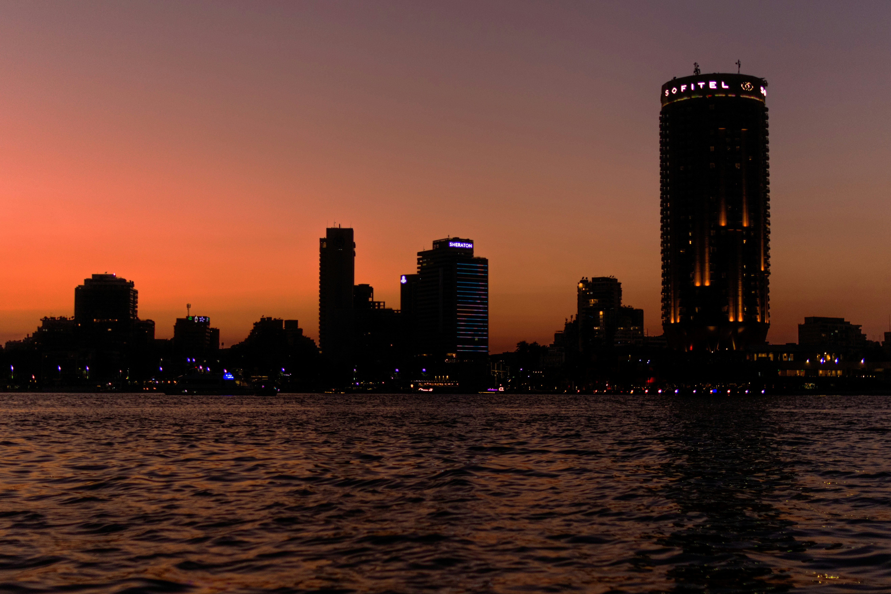
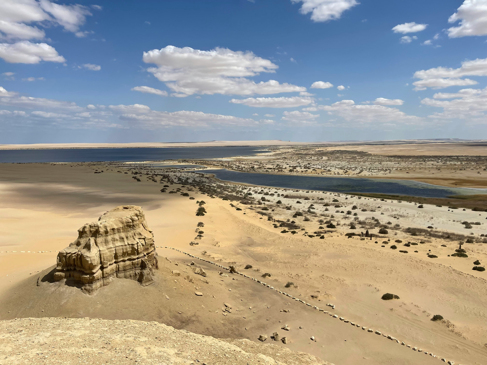
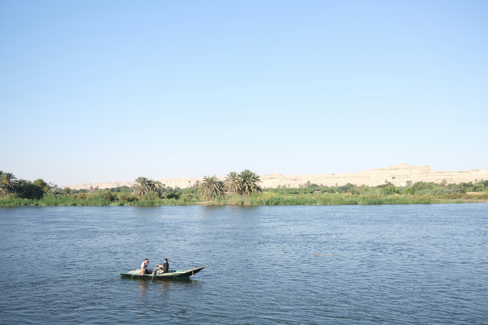
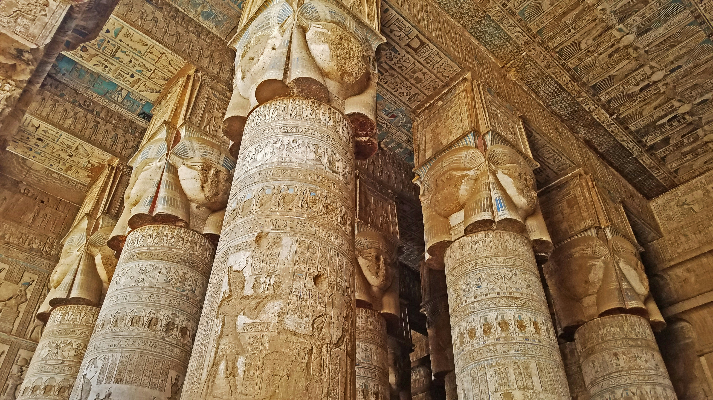
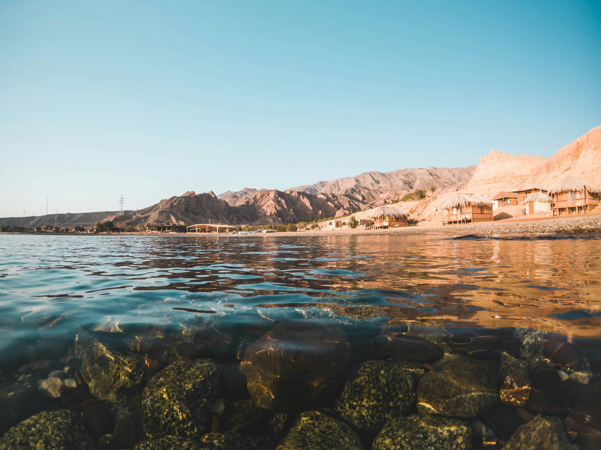
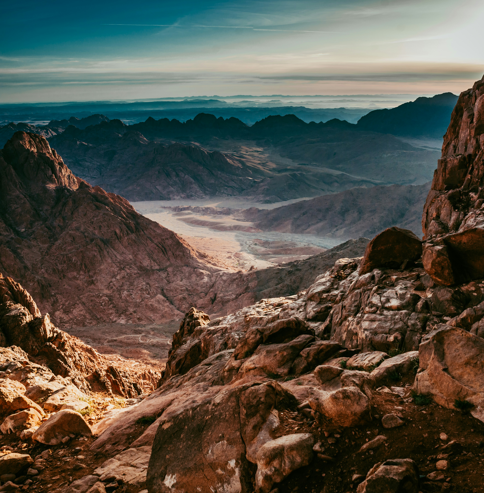
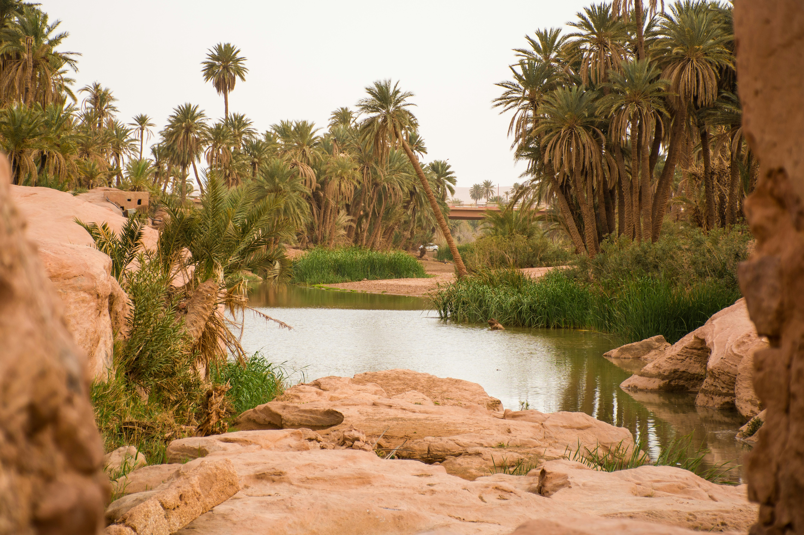

historical sites
this page provides info about different historical sites
Giza

Vibe: Bold, majestic, and unforgettable. Standing in front of the pyramids feels surreal, like you’ve stepped into a history book. It’s busy, but that energy adds to the experience. Weather: Dry desert climate. Summers are very hot, but mornings and sunsets are magical. Winters are mild—perfect for exploring. Why go: It’s the face of Egypt. You don’t just visit you experience something legendary.
Luxor

Vibe: Deep, immersive history with a peaceful rhythm. Every corner feels sacred and grand, yet the city itself is calm and easygoing. Weather: Very hot in summer, but winters are warm and ideal for sightseeing. Why go: Nowhere else lets you walk through ancient temples and tombs like this it’s like an open-air museum you can wander through.
Aswan

Vibe: Calm, scenic, and almost poetic. Life feels slower here, with the Nile and Nubian culture creating a warm, welcoming atmosphere. Weather: Hot but less heavy than Cairo. Winters are sunny and incredibly pleasant. Why go: Perfect if you want beauty + relaxation + history all in one place.
Cairo

Vibe: Loud, lively, and full of life. It’s chaotic but in a way that feels exciting. Every street has a story. Weather: Hot summers, mild winters. evenings are enjoyable. Why go: It’s the heartbeat of Egypt:food, culture, history, shopping… everything is here.
Alexandria

Vibe:Relaxed, romantic, and coastal. Feels softer and calmer than Cairo, with a Mediterranean charm. Weather: Cooler and breezy. Summers are pleasant, winters can be cloudy or rainy. Why go: If you love the sea and a peaceful atmosphere, this is your place.
Fayoum

Vibe: Quiet escape into nature. Feels far away from city stress even though it’s close to Cairo. Weather: Hot in summer, but lakes and open spaces make it feel cooler. Winters are mild. Why go: Ideal for day trips, nature lovers, and a peaceful reset.
Minya

Vibe: Authentic and untouched. it feels like a hidden part of Egypt. Weather:Hot summers, comfortable winters. Why go: Perfect if you want something different from the usual tourist spots.
Sohag

Vibe: Peaceful, spiritual, and deeply historical. It has a quiet charm that feels special. Weather: Hot and dry, with warm winters. Why go: If you enjoy calm places with strong historical meaning, you’ll love it.
Qena

Vibe: Simple and serene, with surprising beauty hidden in its temples. Weather: Very hot in summer, pleasant in winter. Why go: Dendera Temple alone makes it worth the trip it’s one of the most beautiful in Egypt.
Red Sea

Vibe: Bright, relaxed, and full vacation energy. It feels like a getaway—sun, sea, and calm all around. Weather: Warm and sunny almost all year. Summers are hot, but the sea breeze makes it easier. Winters are mild and perfect for the beach. Why go: Crystal-clear water, amazing coral reefs, and some of the best diving spots in the world. Perfect for relaxing and enjoying nature.
North Sinai

Vibe: Remote, quiet, and raw. It feels untouched and far from busy city life. Weather: Mostly dry and hot, with cooler nights. Coastal areas are a bit milder because of the sea. Why go: Historically important as an ancient gateway into Egypt (like Peculium). It’s more about history and landscape than tourism.
New Valley

Vibe: Peaceful, adventurous, and almost otherworldly. Huge open deserts with hidden oases. Weather: Very dry and hot in summer, but winters are pleasant and great for exploring. Big temperature drop at night. Why go: Unique landscapes like the White Desert, plus ancient temples and oasis life. It’s perfect if you want something completely different from typical Egypt.